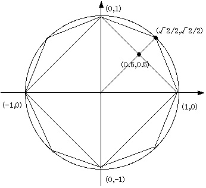

必修課題 課題3-1で指示されるプログラムを作成し， そのプログラムと実行結果を提出する．
レポートは，作成したCのソースファイル（.c）に実行結果をコメントとして貼り付け， その電子ファイルをCLEで提出する．
整数値 n (n >= 1)を読み込んで，その約数を列挙するプログラムを作成せよ．また，すべての約数を求めるまでの最小繰り返し回数も表示せよ．
なお，nが0以下の場合には約数を求めない旨を表示し，以降の処理を行わないこととする．
半径１の円に内接する，2のn乗（ 2 <= n )正多角形は，n の値が大きくなる
と円に近づく．
正多角形の辺の長さを計算することで，円周率の近似値を算出するプログラ
ムを作成せよ．
まずは，正方形から考えてみよう．まず，xy座標上で，x軸，y軸上に頂点を持
つように正方形を考える．
この時の，各頂点の座標は，(1,0), (0,1), (-1,0), (0,-1)となる．
各辺の長さは √2 なので，全部の辺の長さは 4√2である．
従って，2π（円周の長さ）の近似値は 4√2 と考えられる．
次に，正４角形と頂点を共有する正８角形の頂点を求めることを考える．
ただし，正多角形なので，１辺の長ささえ分かれば全辺の和を計算すること
ができるので，(1,0)と(0,1)の間にできる新たな頂点をのみを考える．
(1,0)と(0,1) の中点は，(0.5, 0.5)である．
原点から(0.5, 0.5)までの距離は √2/2なので，(0.5, 0.5)を√2/2で割ると，
正8角形の新たな頂点(√2/2,√2/2) が求まり，(1,0）からの距離として
正8角形の1辺の長さを算出することが可能となる．
同様にして，正8角形と頂点を共有する正16角形の(√2/2,√2/2)と(1,0）の 間にある頂点を算出し，正16角形の1辺の長さを算出することができる． したがって，これを繰り返して，円周率の近似値を計算することができる．
